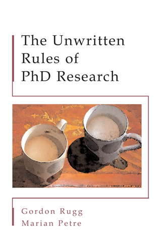

Problem solvers, not stacks of papers
What distinguishes a strong PhD graduate from someone who just finished?
Think of someone you’d want to hire, collaborate with, or have on your committee. What can they do that a person who simply completed the requirements can’t?
Feibelman, a physicist at Sandia, on his own early career:
My first seven publications were in seven different areas of physics. In each case, I relied on a senior scientist to tell me what would be an interesting problem to work on; then I would carry out the task. I assume it was my ability to complete projects that impressed my superiors sufficiently to keep me employed. It certainly wasn’t my depth in any field. — Feibelman, A PhD Is Not Enough!, p. 3
Seven papers. Productive, employable, and still, by his own account, a habit that “seriously threatened my career.”
Virtually all classroom work and much of what happens in a typical thesis project is aimed at developing a student’s technical skills… no technical skill is worth more than knowing how to select exciting research projects. Regrettably, this vital ability is almost never taught. — Feibelman, A PhD Is Not Enough!, p. 2
You already know how to run the tools. This class is about the part that usually goes untaught: choosing the question, and knowing why it matters.
“I’m the person who runs ABAQUS.”
Your value is the tool. When the tool stops being the right one, so do you.
“I’m working out why historic masonry fails under wind load.”
The tool serves the question. You pick up new methods, or a collaborator, when the problem needs them.
You want to be more than simply the master of a particular technique, uninterested in any scientific issue to which it is not applicable. — Feibelman, A PhD Is Not Enough!, p. 122

An apprentice cabinet-maker would finish his apprenticeship … by making a cabinet which demonstrated that he had all the skills needed to be a master cabinet-maker… A successfully defended PhD dissertation fulfils a similar role. It demonstrates that you have all the skills needed to be a researcher in your own right. — Rugg & Petre, The Unwritten Rules of PhD Research, p. 4
The key word is demonstrates. “If the brilliance and erudition isn’t visible in the dissertation, then you’re going to fail.” (p. 5)
The purpose of the PhD is to demonstrate that you can operate as an independent researcher and uncover new knowledge; if you expect your supervisor to know more than you about every aspect of your PhD, then you have missed the whole point. — Rugg & Petre, The Unwritten Rules of PhD Research, p. 34
By the end, you should know your problem better than anyone in the room, including me.
It all builds toward December 8: explaining your work to your committee in your own words.
Why does anyone care?
Tasks vs. questions, and a method for turning a topic into a question worth asking.
Come ready to say, in one sentence and without naming a tool, what you’re working on and why.